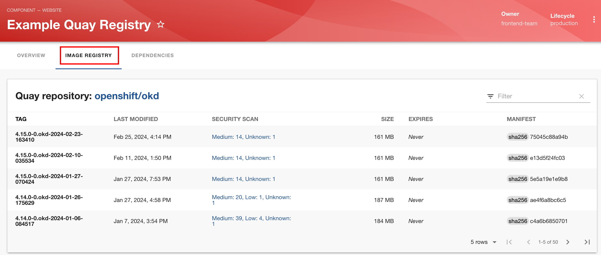
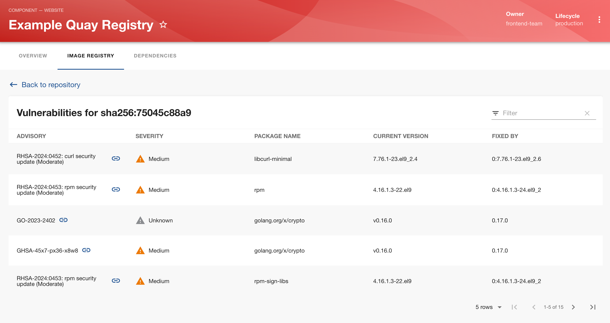

Quay Plugin
The Quay plugin displays information about your container images (in a Quay registry) in the RHDH portal.
The process to enable and configure the Quay plugin consists of two major steps:
-
Configure a proxy endpoint in
app-config.yaml -
Enable the Quay dynamic plugin in your helm chart YAML values file
Configure a Proxy Endpoint for Quay
RHDH comes with a generic proxy component that acts as a lightweight reverse proxy to make calls to external APIs and pass on the output to frontend plugins for visualization in the RHDH web UI. The Quay plugin supports both the public Quay.io container image registry, as well as self-hosted on-premise Quay enterprise versions.
In your app-config.yaml add a proxy endpoint for Quay:
proxy:
'/quay/api': (1)
target: 'https://quay.io' (2)
headers:
X-Requested-With: 'XMLHttpRequest'
Authorization: 'Bearer mytoken' (3)
changeOrigin: true
secure: true # false for self-signed certs in self-hosted versions of Quay
quay:
uiUrl: 'https://quay.io' (2)| 1 | Proxy endpoint for the Quay front-end plugin |
| 2 | Target - value should be https://quay.io for the public registry, or the full URL to your self-hosted Quay registry |
| 3 | Authentication Token. Not needed for publicly available registries. Mandatory for private registries. You can generate tokens in the Quay.io Account Settings > Generate Encrypted Password > `Encrypted Password page. |
Enable the Quay Dynamic Plugin
Enable the Quay dynamic plugin in the RHDH helm chart Upgrade page (YAML view):
- disabled: false
package: ./dynamic-plugins/dist/janus-idp-backstage-plugin-quayLab: Enabling and Configuring the Quay Plugin
Pre-requisites
This hands-on lab uses a publicly available container registry that is freely accessible and hosted in the https://quay.io container registry.
-
If you want to use a private container registry then you need to generate authentication tokens for your account on the https://quay.io website
-
Consult the product documentation for Quay enterprise registry to install and set up account authentication.
Steps
In this lab, you will configure the Quay plugin to access the publicly accessible container registry for the OpenShift OKD project at https://quay.io/repository/openshift/okd.
-
Edit the
app-config-rhdhConfigMap and add a proxy endpoint for Quay.ioproxy: '/quay/api': target: 'https://quay.io' headers: X-Requested-With: 'XMLHttpRequest' #Authorization: 'Bearer mytoken' # for private registries only changeOrigin: true secure: true quay: uiUrl: 'https://quay.io' -
Enable the Quay dynamic plugin in the upgrade helm chart YAML view:
- disabled: false package: ./dynamic-plugins/dist/janus-idp-backstage-plugin-quayClick
Upgradeto re-deploy the helm chart. Wait until the RHDH container is fully restarted. -
Inspect the catalog YAML descriptor files at https://github.com/RedHatQuickCourses/devhub-qc-apps/blob/main/quay/quay-registry.yaml for an RHDH component that tracks the OpenShift OKD container registry. You need to add an annotation for the Quay plugin to fetch container image information from the appropriate registry.
apiVersion: backstage.io/v1alpha1 kind: Component metadata: (1) name: myquay title: Example Quay Registry description: | This is a simple Quay.io personal image registry example website links: - title: My Quay url: https://quay.io annotations: quay.io/repository-slug: openshift/okd (2) spec: ...1 Metadata for this component - name, description and links to the public quay.io registry 2 Annotation to identify the registry from which container image metadata needs to be fetched. In this case the OKDproject registry. If you have a private registry with your own organization, then change this slug to reflect the path to your registry. The same path information applies to privately hosted Quay enterprise registries. -
Import this component into RHDH using the
Create > REGISTER EXISTING COMPONENTpage. Once imported, click theExample Quay Registryitem on the RHDH Catalog page -
Observe that a new tab named
IMAGE REGISTRYis visible. Click on this tab to view the information for container images contained in theopenshift/okdregistryFigure 1. Container images in Quay.io OKD registry -
Click on any of the links in the
SECURITY SCANcolumns to view vulnerability information for the image. You can search and filter results in this view.Figure 2. Vulnerability info for images